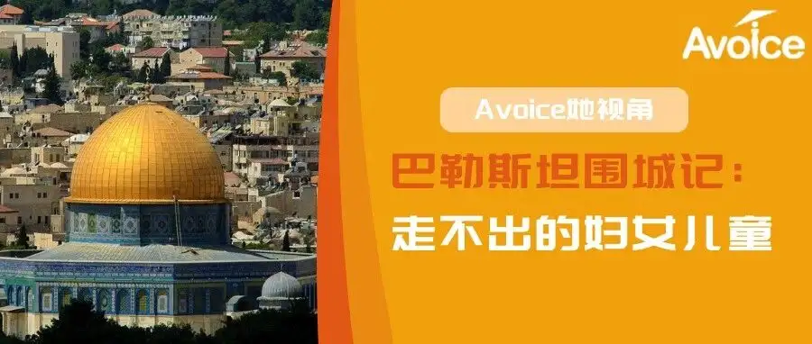
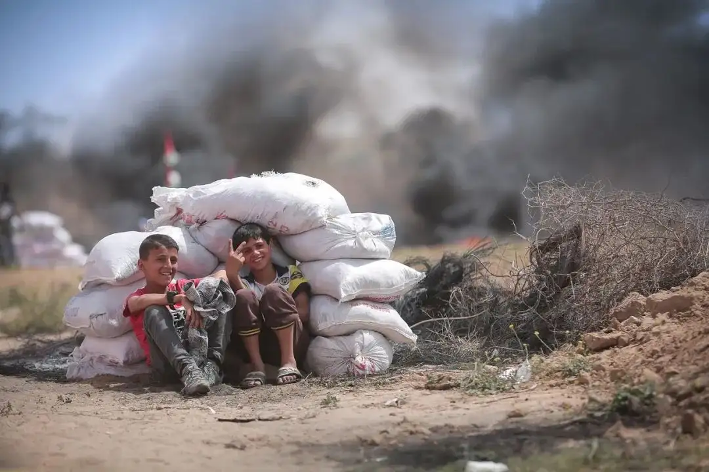
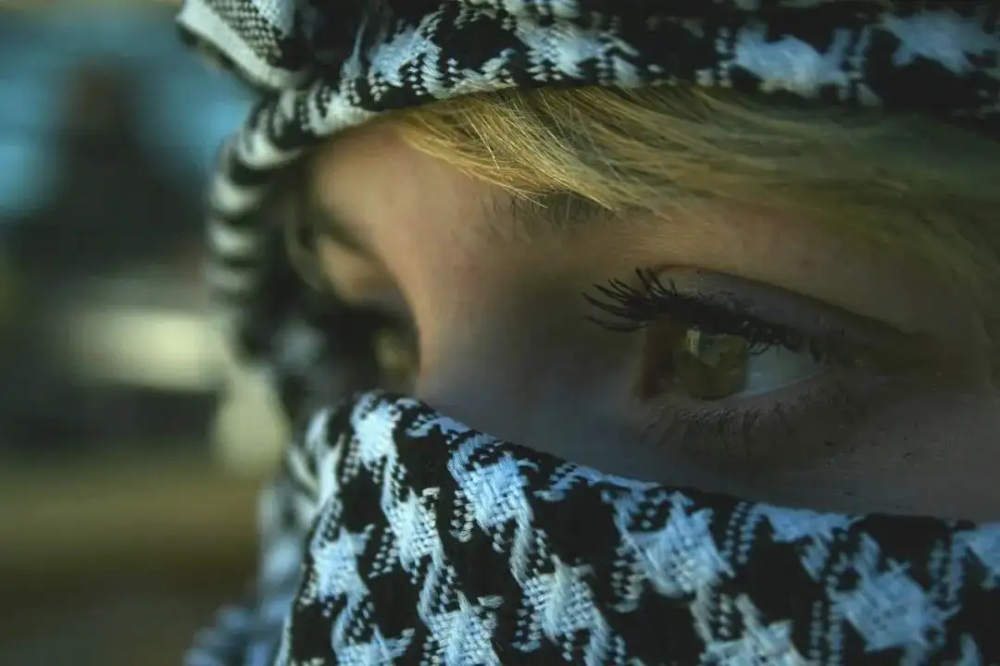
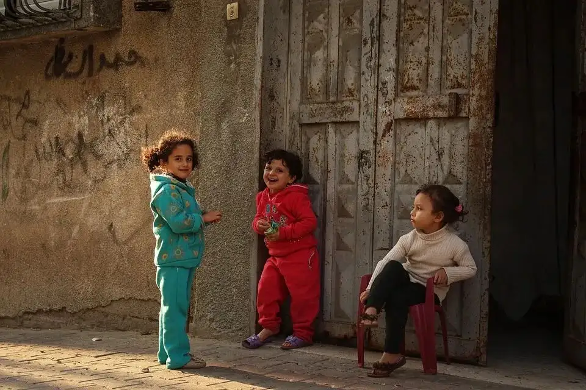

悲伤无处不在
随处可见
就像是抬眼可见的天空一样
当她们看到摇篮里的孩子受饥挨饿时
所有的母亲都会哭泣
哪怕不是为了自己的孩子
那些孩子可能因此长眠不醒
——《小巴勒斯坦围城日记》
2023年10月7日，清晨的宁静被来自加沙的枪炮声打破，大批武装人员越境进入以色列并袭击了以色列相关地区。火箭弹的轨迹将特拉维夫、耶路撒冷等地笼罩在战火之中。同年10月9日，以色列国防部长宣布对加沙实施“全面封锁”，切断电力、粮食和燃料，为以色列此前对加沙持续了16年的封锁增添了更深的阴影。

图片来源：pixbay
这场全面封锁的景象，与纪录片《小巴勒斯坦围城日记》中雅尔穆克难民营被围困“相映成哀”，诉说着封闭之地的苦难与挣扎。十几年过去，历史的回音却仍然令人痛心。
纪录片《小巴勒斯坦围城日记》以叙利亚内战为背景，聚焦雅尔穆克难民营在战火中的绝望与坚持。 雅尔穆克是 1957 年在大马士革南边建立的巴勒斯坦难民营。战前曾是叙利亚最大的巴勒斯坦人聚居地。然而，叙利亚内战爆发后，雅尔穆克成为战争的缩影，巴勒斯坦社群在各方势力的争夺中沦为被利用、抛弃和遗忘的群体。
图片来源：pixbay
在2011年，叙利亚内战期间，耶尔穆克难民营成为了重要的战斗地点之一。具体来说，从2012年起，叙利亚自由军（反对派武装）与叙利亚政府军支持的解放巴勒斯坦人民阵线总司令部（亲政府的巴勒斯坦武装组织）在这里发生了激烈的战斗。两派势力将耶尔穆克作为争夺控制权的战场，导致难民营的局势急剧恶化。据统计，在叙利亚内战期间，有 160,000 名巴勒斯坦人流离失所，被迫离开自己赖以生存的家园。在纪录片中，封锁的程度不断升级，最终演变为全面围城。随着所有物资的供应被切断，食物、药品和燃料变得极度稀缺，居民被迫在饥饿与疾病的双重威胁下挣扎求生。
这部纪录片不仅呈现了雅尔穆克围城的残酷现实，也为我们提供了一种视角，去理解当下巴以冲突中平民，特别是妇女和儿童的处境：本该在教室里上学的孩子，却在废墟间低头割采平日不曾入口的野菜，身后传来炮火的轰鸣。导演问她：“你不怕吗？”她轻声回答：“习惯了。” 镜头一转，街头一双脏污的脚引起注意。那是属于一个瘦小女孩的脚，裸露在尘土与碎石之中，脚背的擦伤清晰可见。
我们的目光随着镜头上下游移，试图拼凑出这具小小身躯的全貌：她穿着早已破旧的衣服，衣角沾满泥垢，手里拎着一个破损的塑料袋，里面装着几片刚摘下的野草。女孩的目光垂向地面，仿佛对周围的一切都习以为常。当我们的视线终于与她的眼神交汇，那双大而明亮却布满倦意的眼睛，瞬间将镜头外的世界拉入一种令人窒息的真实。

图片来源：pixbay
镜头原本用于揭示日常，此时却揭示了更深的现实：在这片土地上，无辜的妇女和儿童无处可逃，他们承受着战争最直接的伤害。为什么我们这么关注战争中的妇女和儿童？如果妇女和儿童的伤亡比例过高，这不仅是一个数字，更昭示着战争对平民的极端不成比例的摧残——那些最无力保护自己的人，往往成为暴力之下最先倒下的生命。
在巴以冲突中，妇女和儿童往往成为最直接的受害者，占伤亡人数的三分之二以上。Ta们不仅面临暴力袭击，还因孕产保健和儿童医疗服务的受限，遭受营养不良、疾病和更高的死亡风险。2023年10月7日至31日期间，以色列安全部队在西岸和东耶路撒冷逮捕了1,760名巴勒斯坦人，其中包括145名妇女、55名儿童和17名记者，签发了872份行政拘留令。这些逮捕常伴随殴打、羞辱以及不人道和有辱人格的对待，有时甚至构成酷刑。
与此同时，政府进一步限制被拘留者获取基本生活必需品和法律援助的权利，导致食物严重短缺、卫生条件恶劣，甚至出现儿童、妇女和老人遭受暴力的报告。在一些情况下，这些行为相当于酷刑或其他形式的虐待。战争的重压，不仅体现在伤亡数字上，更体现在这种对最弱势群体生存权的系统性侵害中。

图片来源：pixbay
当妇女和儿童成为伤亡数据中无法忽视的部分，我们不禁质问，是否有可能减少这种不成比例的伤害？或许，关注这些故事并不一定能改变现状，但它能够让我们更清晰地认识到，和平的价值不仅在于结束冲突，更在于避免让最脆弱的人群继续承受战争的代价。理解与反思，是通向更公正未来的一步。
参考文献
撰稿｜汤欣然
审核｜秦科
排版｜圆圆